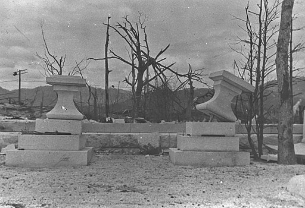

A Few Words
Take a closer look, Mr. Mouse
Used under the Creative Commons Attribution 2.0 Generic license.
World War II was the most devastating conflict to take place in recent years, with an estimated 50 million casualties, or approximately 2% of the global population.
Aviation played a major role in World War II. In fact, it could be argued that the various air forces had greater significance in World War II than any other branches of the military. Over the course of World War II, over 450,000 air combat missions were flown and more than 3 million tons of bombs were dropped by the A.A.F. and R.A.F. alone.
The significance of the air forces lay in the strategic advantages of air dominance. Aircraft were faster than any other mode of transportation, could travel relatively great distances, and were unhindered by terrain, minefields, and enemy armor or infantry divisions. Thus, the skies presented the greatest opportunity for supplying friendly forces and carrying out all manner of attacks.
Similarly, World War II played a major role in aviation. Over the course of the war, more than 700,000 aircraft were manufactured for the war efforts of both sides. The increasing demands for aircraft that could outmatch the enemy's in this new theatre brought aviation into focus.
From Wikipedia
Of course, the advancement of aviation technology pales in comparison to the effect the second world war had on the world. From then on, the world has been set up to fall down.
An interesting discussion of the quote.